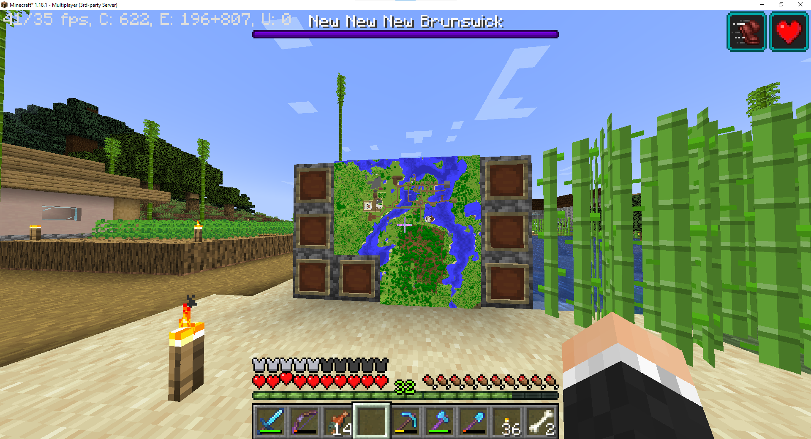
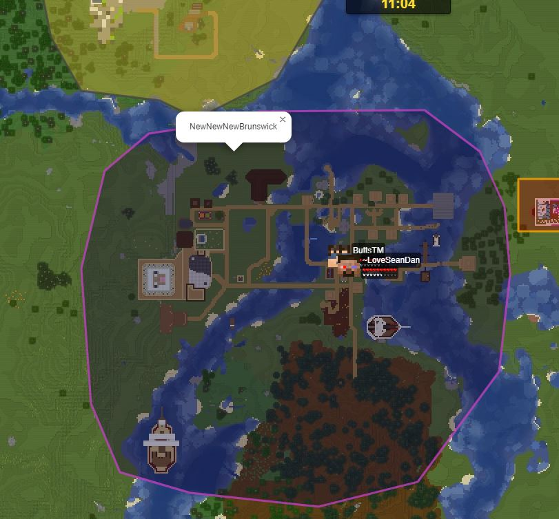
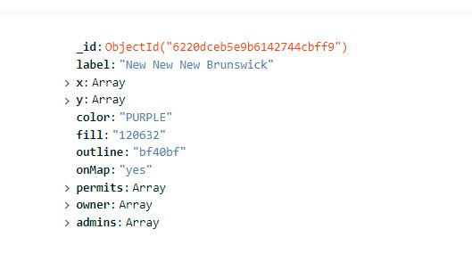
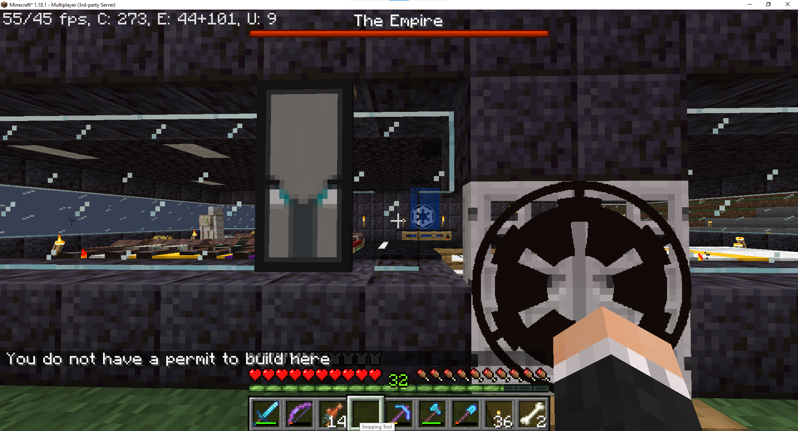

The Farlands Cities Plugin and Website
Project Description
The goal of this project is to create a new cities plugin with dynamic borders.
Much like other "claim" or "plot" server plugins but with added customization, permit management, dynamic server live map through DynMap API, and more!
Team
- Plugin and Website Developer - Robert Reid
- Server Integrator - Kiernan King
- Server Administrator - Joshua Wright



